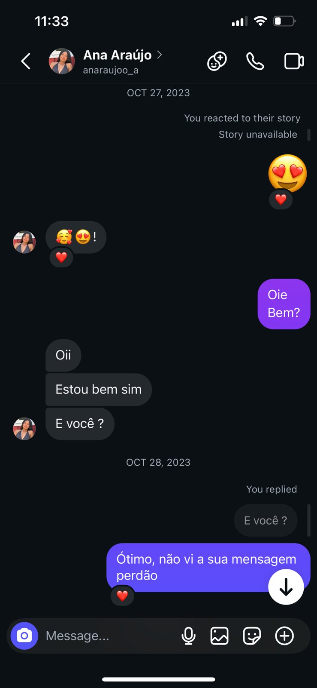
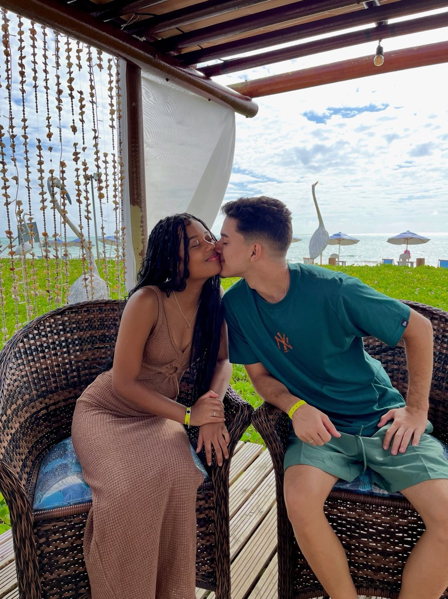
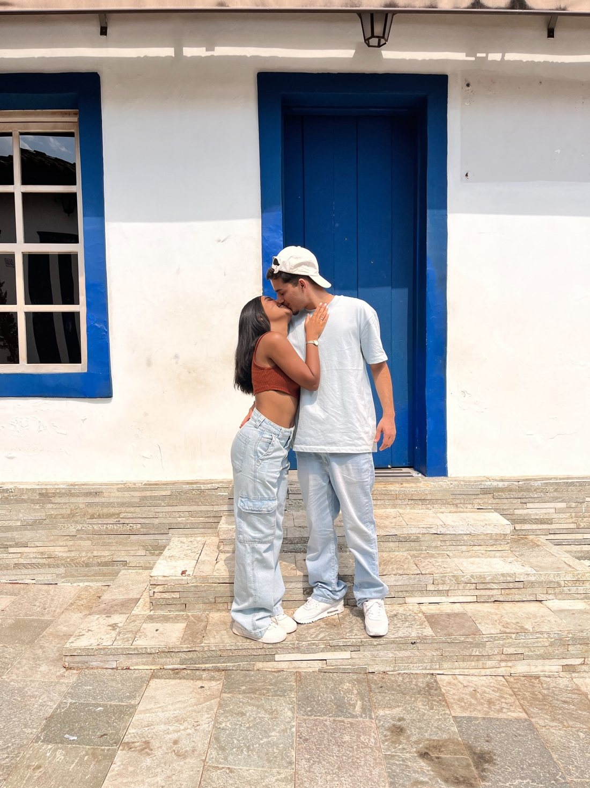
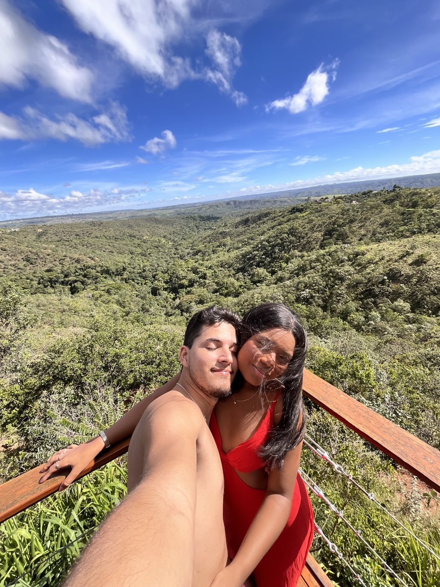
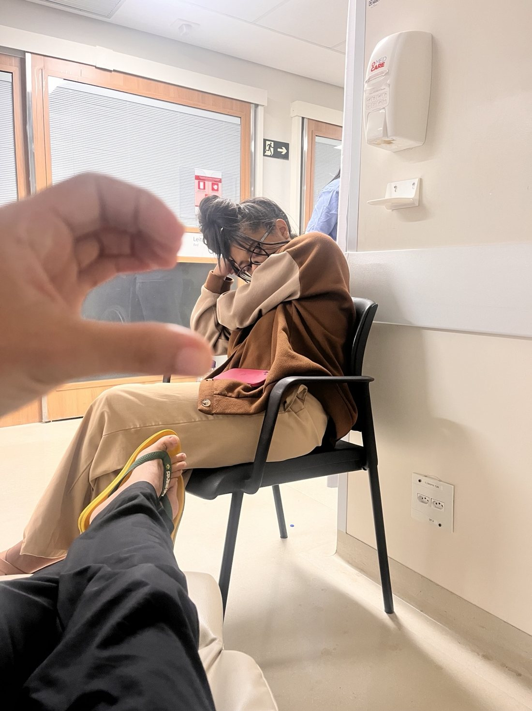
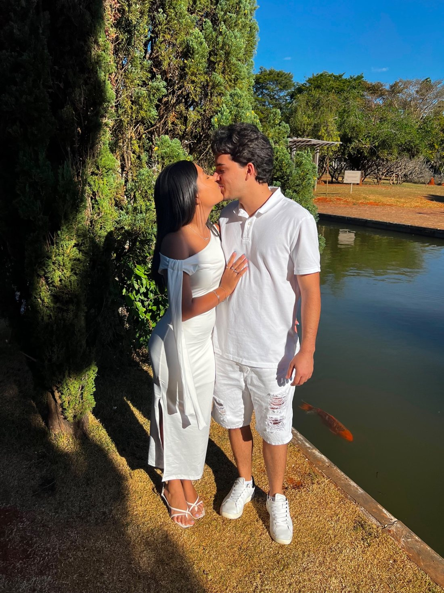

Nossa
História
Algumas histórias começam de um jeito inesperado. A nossa também.
27 de outubro
de 2023
Há três anos, começava uma história que mudaria duas vidas.
De uma curtida em um vídeo no Instagram de um amigo em comum a uma mensagem enviada por colegas de trabalho entediados…
Alguns podem até chamar de acaso. Mas nós não temos dúvidas: os planos de Deus são perfeitos — e Ele sabe escrever certo por linhas tortas.

A primeira mensagem não foi enviada pelo noivo.
Pequenos detalhes que acabaram mudando o rumo da vida desse casal.
Três anos.
Tantas histórias.
Ao longo dessa caminhada, colecionamos sorrisos, viagens, descobertas e momentos que vamos guardar para sempre.

Em Maragogi, Alagoas, curtindo as férias em família.

Nossa viagem a Pirenópolis.

Viagem de aniversário do noivo.
Um pedacinho do mundo do outro
Ana conheceu o interior pernambucano, em Itapetim.
A noiva conhecendo o interior de Itapetim, Pernambuco.
E Gabriel conheceu Paranã, no interior do Tocantins.
O noivo conhecendo Paranã, Tocantins.
Nem tudo foram dias fáceis
Entre os momentos bons, também encontramos desafios. Nos dias difíceis, aprendemos que amar é, acima de tudo, estar presente.

O noivo doente, e a noiva sempre ao seu lado.
E foi superando cada desafio, lado a lado, que construímos uma aliança cada vez mais forte.
É hora de escrever
um novo capítulo.
Entre altos e baixos, descobertas e aprendizados, chegou o momento de dar o nosso próximo grande passo.
Nós vamos nos casar!

Um registro especial, feito no dia do pedido de casamento do irmão do noivo.
E nenhuma história fica completa sem as pessoas especiais que fazem parte dela.
Queremos você ao nosso lado nesse dia.
Toque no envelope para abrir o convite
Gabriel
&
Ana Claudia
Convidam você para celebrar o início de um novo capítulo da sua história.
Sítio Verde Flor – Espaço & Eventos
O nosso grande dia chegou! ♡